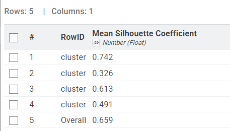
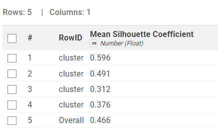
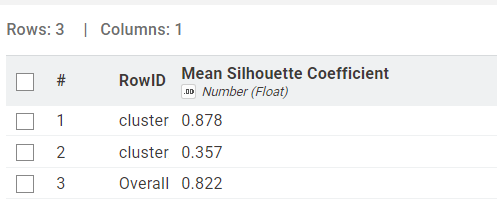
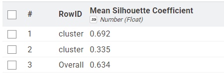

Clustering K-Means#
Dokumen ini menyajikan tahapan analisis pengelompokan spasial (spatial clustering) dari dataset gabungan 3 polutan udara (NO2, CO, SO2) yang telah diekstraksi menjadi fitur gabungan terpusat (multi-polutan). Pada tahapan ini seluruh polutan diproses dalam satu tabel sehingga menghasilkan 204 fitur (68 fitur x 3 polutan) untuk tiap daerah observasi.
Tujuan dari tahapan ini adalah untuk mengeksekusi pengelompokan area (clustering) guna menemukan daerah mana saja yang memiliki tren dan profil pencemaran campuran (multi-pollutant) yang identik. Eksperimen ini memadukan validasi di Python (Scikit-Learn) dan visualisasi alur di KNIME Analytics Platform.
1. Eksperimen Analisis Silhouette Menggunakan KNIME#
Proses segmentasi klaster juga divalidasi dan divisualisasikan secara komprehensif menggunakan KNIME Analytics Platform dengan fokus pada perbandingan performa antar skenario reduksi dimensi secara paralel.

Fig. 1 Visualisasi Struktur Alur Kerja (Workflow) Multi-Polutan pada KNIME#
(Catatan: Anda dapat memperbarui direktori gambar di atas dengan tangkapan layar spesifik dari struktur KNIME milik Anda).
1.1 Penjelasan Alur Percabangan (Pipeline) KNIME#
Berdasarkan workflow yang telah Anda susun, tahapan analisis dirancang tanpa blok looping, melainkan didistribusikan secara linier dan eksplisit:
MySQL Connector \(\rightarrow\) DB Table Selector \(\rightarrow\) DB Reader: Menarik seluruh data ekstraksi gabungan multi-polutan (204 kolom fitur) dari basis data langsung menuju memori KNIME agar bisa diolah secara lokal.
Jalur Reduksi Dimensi (PCA): Data dari DB Reader langsung disebar secara paralel ke 4 (empat) cabang utama:
Jalur Tanpa PCA (Baseline): Murni menggunakan 204 fitur mentah asli tanpa dikompresi.
Jalur PCA 203 Dimensi: Mempertahankan seluruh struktur matriks tetapi membuang redundansi linear satu kolom terakhir.
Jalur PCA 74 Dimensi: Kompresi moderat (menghilangkan lebih dari setengah dimensi bervarians kecil).
Jalur PCA 37 Dimensi: Kompresi maksimal berdasarkan Maximum Rank.
Node K-Means (Paralel) & Evaluasi Silhouette: Setiap ujung jalur PCA dibagi paralel menuju 3 node k-Means. Parameter K-Means pada masing-masing jalur disetel statis berturut-turut pada \(k=2\), \(k=4\), dan \(k=7\). Setiap output k-Means dievaluasi langsung menggunakan node Silhouette Coefficient (untuk melihat skor ketajaman batas klaster) dan node Scatter Plot (untuk memvisualisasikan data).
1.2 Interpretasi Hasil Clustering dan Kesimpulan#
Dari eksperimen tersebut, terdapat dua penemuan krusial yang diamati dari skor evaluasi Silhouette Coefficient.
A. Fenomena Konsistensi Hasil pada Seluruh Skenario Dimensi (PCA)#
Berdasarkan hasil eksperimen di KNIME, output pengelompokan (clustering) untuk nilai \(K\) yang sama memberikan nilai metrik Silhouette yang persis sama, baik pada jalur data mentah (tanpa PCA), PCA 203, PCA 74, maupun PCA 37. Mengapa hal ini bisa terjadi?
Derajat Kebebasan Matematis (Maximum Rank): Jumlah daerah pengamatan (rows) yang dikelompokkan hanya berjumlah 37 area. Secara perhitungan linear algebra, seberapapun banyaknya fitur yang kita miliki (204 kolom), matriks tersebut hanya bisa memiliki varians efektif maksimum sebesar 37 (rank = 37).
Zero Loss of Information: Ketika KNIME mereduksi data dari 204 dimensi ke 37 dimensi, algoritma PCA berhasil menyimpan 100% informasi struktural (varians utama) tanpa terpotong sama sekali. Sisanya hanyalah “ruang kosong” atau redundansi.
Kesimpulannya, K-Means membaca proporsi jarak Euclidian yang sama persis di antara ke-37 titik data tersebut, baik di ruang 37 dimensi maupun 204 dimensi, sehingga susunan klaster dan skor Silhouette-nya tidak berubah sama sekali. Namun, komputasi pada PCA 37 jauh lebih ringan dan efisien.
B. Tabel Hasil Eksperimen Silhouette (Jalur Fitur Linier)#
Berikut merupakan ringkasan matriks nilai Silhouette Coefficient yang didapatkan dari ujung pipeline untuk setiap cabang pengujian:
Jalur Node |
Jumlah Klaster (\(k\)) |
Silhouette 203 Dimensi |
Silhouette 74 Dimensi |
Silhouette 37 Dimensi |
Status Evaluasi |
|---|---|---|---|---|---|
|
\(k = 2\) |
|
|
|
Klaster Optimal (Tertinggi) |
|
\(k = 4\) |
|
|
|
Mulai terjadi pemecahan zona transisi |
|
\(k = 7\) |
|
|
|
Over-segmentation ekstrem (klaster terlalu kecil) |
C. Tabel Hasil Eksperimen Silhouette (Jalur Fitur Polinomial)#
Sama halnya dengan jalur linier, dataset yang diekstraksi secara polinomial juga dievaluasi. Transformasi polinomial ini biasanya menangkap interaksi non-linier antar polutan, sehingga memberikan skor yang sedikit berbeda secara matematis namun tetap konsisten secara pattern:
Jalur Node |
Jumlah Klaster (\(k\)) |
Silhouette 203 Dimensi |
Silhouette 74 Dimensi |
Silhouette 37 Dimensi |
Status Evaluasi |
|---|---|---|---|---|---|
|
\(k = 2\) |
|
|
|
Klaster Optimal (Tertinggi) |
|
\(k = 4\) |
|
|
|
Mulai terjadi pemecahan zona transisi |
|
\(k = 7\) |
|
|
|
Over-segmentation ekstrem (klaster terlalu kecil) |
D. Evaluasi Kualitas Klaster Terbaik (\(k=2\), \(k=4\), \(k=7\))#
Evaluasi Silhouette Coefficient mengukur seberapa padat suatu klaster dan seberapa jauh jaraknya dari klaster lain. Semakin mendekati angka 1.0, semakin baik dan solid pemisahannya.
Baik pada jalur data fitur Linier maupun Polinomial, keduanya secara absolut menempatkan \(K=2\) sebagai konfigurasi paling solid. Berikut adalah interpretasi visualisasi dan analisis mendalam dari ketiga pengujian jumlah klaster di atas:
1. Hasil untuk \(K = 7\)

Fig. 2 Hasil Silhouette Coefficient Linier untuk k=7 (Skor Keseluruhan: 0.582)#

Fig. 3 Hasil Silhouette Coefficient Polinomial untuk k=7 (Skor Keseluruhan: 0.537)#
Pada pembagian 7 klaster, skor keseluruhan (Overall) anjlok ke angka 0.582 (Linier) dan 0.537 (Polinomial). Hal ini terjadi karena pemecahan wilayah terlalu banyak (over-segmentation). Daerah-daerah dengan sedikit perbedaan dipaksa pisah menjadi klaster terisolasi sehingga kepadatan klaster (kohesi) menjadi sangat lemah.
2. Hasil untuk \(K = 4\)


Fig. 4 Hasil Silhouette Coefficient Linier untuk k=4 (Skor Keseluruhan: 0.659)#


Fig. 5 Hasil Silhouette Coefficient Polinomial untuk k=4 (Skor Keseluruhan: 0.466)#
Pada \(k=4\), pemisahan wilayah pada fitur Linier mulai membaik dengan skor 0.659, namun fitur Polinomial justru mencatatkan penurunan tajam menjadi 0.466. Meski mulai terbentuk segmen yang relevan, masih terdapat banyak irisan antar batas zona (klaster transisi) sehingga jarak separasinya belum ideal.
3. Hasil untuk \(K = 2\) (Klaster Terbaik)


Fig. 6 Hasil Silhouette Coefficient Linier untuk k=2 (Skor Keseluruhan: 0.822)#


Fig. 7 Hasil Silhouette Coefficient Polinomial untuk k=2 (Skor Keseluruhan: 0.634)#
Nilai \(K=2\) terbukti sebagai konfigurasi clustering terbaik pada kedua skenario. Dengan nilai agregat Overall mencapai 0.822 (Linier) dan 0.634 (Polinomial). Secara geografis dan polusi, ini menandakan bahwa 37 daerah observasi secara alamiah terpolarisasi dengan sangat kuat dan tegas ke dalam dua kelompok besar saja: Zona Tinggi Polutan dan Zona Rendah Polutan (Background). Memecah mereka lebih dari dua kelompok hanya akan merusak batas solid tersebut. Fitur polinomial menangkap interaksi non-linier antar polutan, sehingga meskipun skornya lebih rendah, struktur klaster utamanya tetap bersepakat pada binerisasi (K=2).
2. Pemetaan Segmentasi Wilayah#
Berikut adalah visualisasi spasial dari pembagian daerah menggunakan konfigurasi klaster terbaik (=2$). Peta interaktif ini diproyeksikan langsung dari koordinat 37 daerah observasi berdasarkan hasil pelabelan k-Means di KNIME.